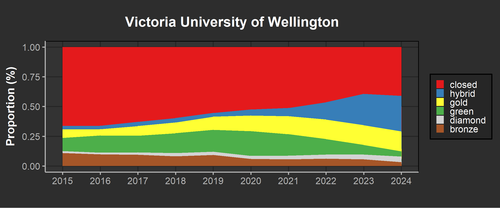
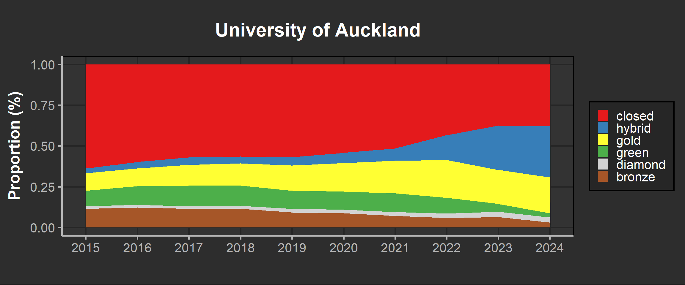

The University of Auckland produces a significant proportion of Aotearoa New Zealand’s research output …
OA policy and fund introduced in X …
… alongside regional initiatives the University participates in through membership in CAUL
Headline numbers
Regional highlights include:
2013 and 2014 ARC and then the NHMRC developed OA policies. 2020 CAUL signs first R&P agreements - mention coalition S (rationale, failure) 2022 UNZ endorses pan-university statement on open access - 70% commitment by 2025 2023 MBIE open research policy 2024 AU Chief Scientist releases recommendations
Author awareness of OA has historically been low, and even librarians struggle to keep up with developments, terminology, options [Kingsley 2022].
All major stakeholders in Aotearoa New Zealand’s research sector agree that open access to publicly-funded research is a desirable outcome, but the complexities and entanglements between academic publishing, research evaluation, and research funding make it difficult to change one part without creating adverse or unintended consequences for the others. [Saunders report]
New Zealand universities have made significant progress in moving towards higher rates of OA, but this progress has come at the cost of ballooning article processing charges (APCs), a stagnation of repository-based OA, and a reduction in bibliodiversity caused by the relentless consolidation of academic publishing into fewer publishing houses [Tairi/Barbour].
uoa oa trend plot


| Item Type | Count | Proportion |
|---|---|---|
| article | 46576 | 91.56% |
| book-chapter | 3912 | 7.69% |
| book | 382 | 0.75% |
| Year | Works | Citations | Median | Average |
|---|---|---|---|---|
| 2015 | 4,326 | 131,381 | 11 | 30.4 |
| 2016 | 4,724 | 131,933 | 11 | 27.9 |
| 2017 | 4,658 | 131,962 | 11 | 28.3 |
| 2018 | 4,935 | 138,331 | 11 | 28.0 |
| 2019 | 5,423 | 144,602 | 9 | 26.7 |
| 2020 | 5,781 | 118,641 | 8 | 20.5 |
| 2021 | 5,861 | 82,218 | 6 | 14.0 |
| 2022 | 5,387 | 53,792 | 4 | 10.0 |
| 2023 | 5,361 | 29,773 | 2 | 5.6 |
| 2024 | 4,414 | 9,002 | 0 | 2.0 |
| Mean Citations | Median Citations | |
|---|---|---|
| Closed | 16 | 5 |
| Open | 22 | 7 |
Each year, open access items enjoy median citation rates between 0% and 62% higher than closed items.